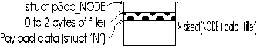

Perhaps no aspect of C programming strikes more fear into the programmer's heart than the dreaded "Hey, it looks like you've got a memory leak." So evil is this affliction it created a multi-million dollar company in the form of Purify Inc. Amazing isn't it?
I hate memory management so in this version of the library I designed a set of tools that would manage memory for me in a way that I hope will be robust and reliable. Also because we're doing real-time 3-D graphics here it has to be fast.
This document is broken up into two sections:
The memory subsystem was designed around the principle that most of the time, the same things get allocated and deallocated again and again. In particular the vertices, transforms, colors, and lights are used and re-used while generating the scene.
One common technique of addressing this issue is to use pre-allocated arrays of things that you use on a dynamic basis. The problem with this technique is answering "how many" things do you pre-allocate? However, for something like a game, this technique can be useful as the answer to the question can be determined empirically. This is done by playing the game and fixing it when it runs out of space.
The pre-allocation technique is not acceptable in a more general purpose engine because you don't know apriori how many things will be rendered or changed etc. And yet the simple technique of calling malloc/free each time is tremendously expensive in terms of CPU time. (even the simpler malloc libraries use non-trivial amounts of time.)
The solution I am currently employing and evaluating consists of using malloc to force allocations but to never call free. (Sounds like a memory leak but it isn't really :-)
I use the fact that as far as the engine is concerned, 99.99% of the time the engine or the user will be allocating things of a type already known to the engine so the allocator is designed around the P3DC type structure.
The design is to allocate structures from the heap, and then when deallocating them to put them onto a list so that they might be used again later. When a subsequent allocation request is made the structure is fetched from the free list. Currently, mallocs are done on a 1:1 basis (one request, one malloc) but it is possible to change this to malloc several instances in preparation for future requests. The cost of this 'pre-allocation' is that when you reach a steady state you risk having over allocated memory by the number of structures in your pre-fetch size.
The key interfaces in this library are clearly new and free however they manage chunks of memory by allocating them as shown below.

The actual allocation is large enough to hold both a p3dc_NODE structure and a structure of the desired type. Then the pointer to the type is returned. Later, I can recover the node pointer with simple pointer arithmetic and verify it to be valid by the following test:
If they match I assume its valid. Note that this arrangement also lets me recover the type of a void * pointer in other places in the library too. There is a function p3dc_get_type that does this.
void * p3dc_new_type( p3dc_TYPE req )
This function allocates a new structure of type req for the program to use. It first checks the free list to see if any unused structures are present, and if so uses one, otherwise it allocates a new structure + node from the heap and returns a pointer to sufficient memory to hold a structure of type req.
void p3dc_free_type( void *data )
This function will free a structure previously allocated with p3dc_new_type. It does this by subtracting a value equal to about sizeof(p3dc_NODE) from the pointer and looking for a p3dc_NODE structure there. Various sanity checks are performed then the structure is added into that node's free list for later reuse. For performance reasons it is added to the head of the free list and will be re-allocated on the next call to p3dc_new_type that needs this type of structure. The side effect of this is that dangling pointer problems are caught quickly.
p3dc_TYPE p3dc_get_type( void *data )
Return the P3DC type associated with this pointer. This function only works on things that have been allocated with p3dc_new_type above. If the pointer does not seem to have a node behind it then the function returns P3DC_UNKNOWN.
void p3dc_memstats( int reset )
This function causes a summary of memory usage to be printed to the log file. If the value of reset is non-zero, the memory statistics are being reset. This feature allows you to wait for your application to reach steady state and then to dump out statistics to see that no new mallocs are being done.
void p3dc_reset_memstats( void )
This function will force a reset of the memory statistics.